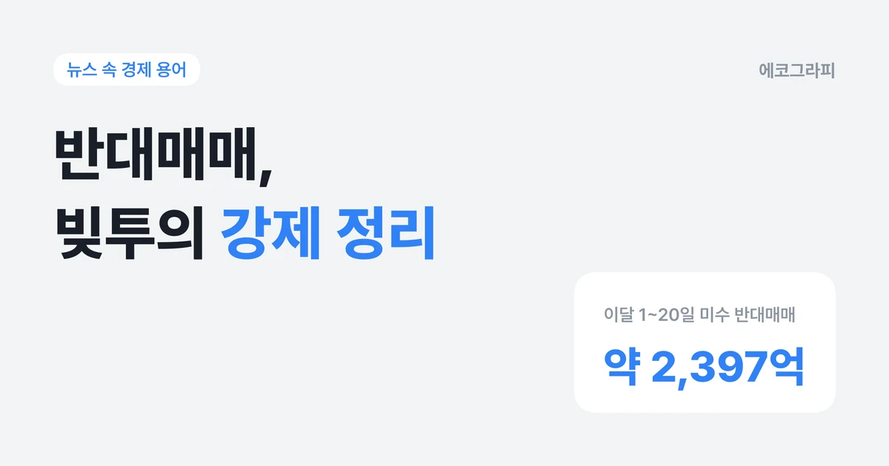
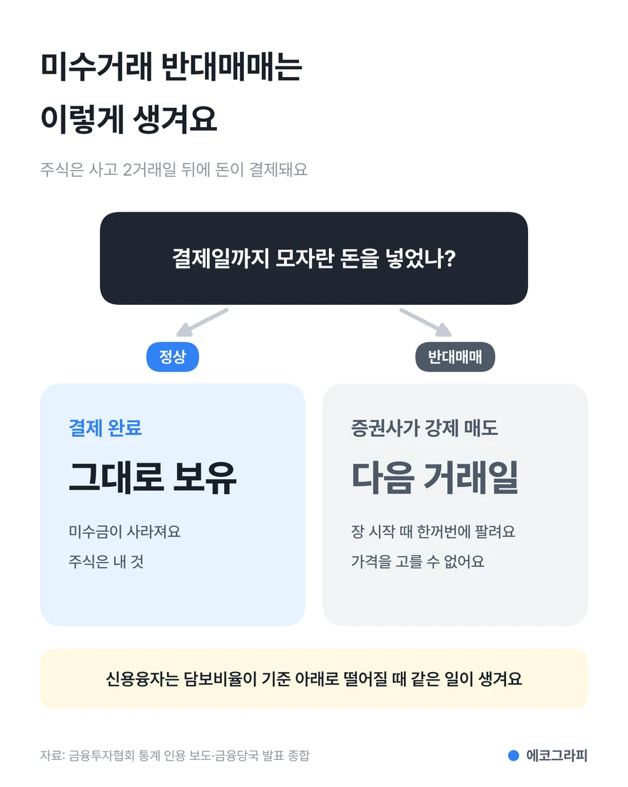
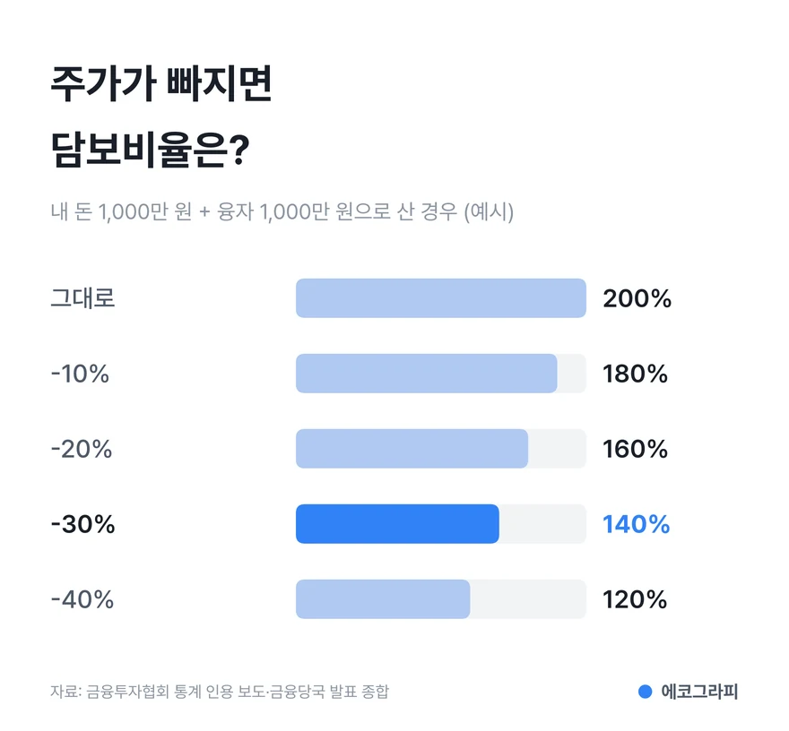
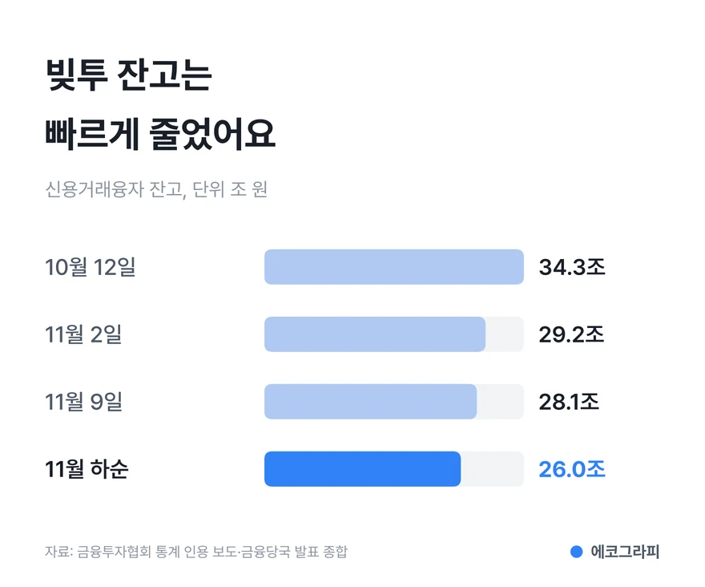
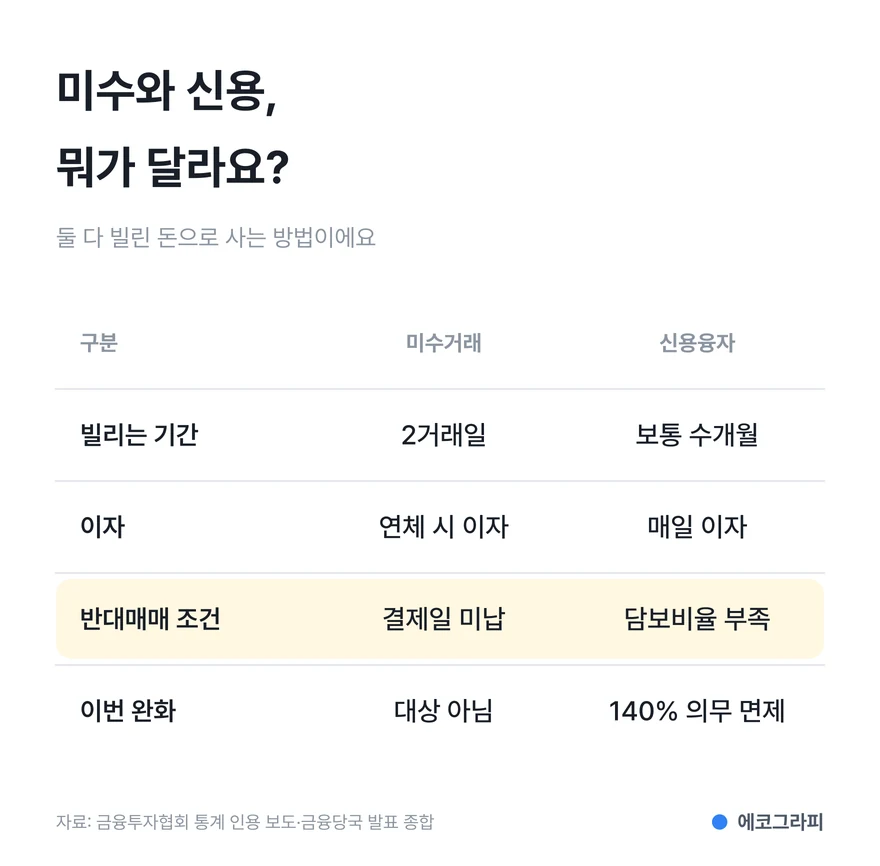

코스피가 이틀 연속 사이드카와 함께 급락하자 "26조 신용잔액, 반대매매 경고등" 같은 기사가 나왔어요. 증권가에서도 선물이 급락한 뒤 반대매매 걱정과 투매가 겹쳤다는 말이 나왔어요. 어제 시장 흐름은 오늘 아침 시황에 정리했어요.
반대매매: 투자자가 증권사 돈을 빌려 주식을 샀는데 약속한 날까지 돈을 채우지 못하거나 담보가 기준보다 모자라면, 증권사가 돈을 돌려받으려고 그 주식을 강제로 파는 거예요.
빚투에는 크게 두 가지가 있어요. 미수거래는 주식 값의 일부만 증거금으로 내고 나머지는 결제일(산 날부터 2거래일 뒤)까지 넣기로 하는 방식이에요. 이 돈을 못 넣으면 통상 다음 거래일에 주식이 팔려요.

신용융자는 증권사에서 몇 달씩 돈을 빌리는 방식이에요. 이때는 '담보비율'이 중요해요. 담보비율은 내 계좌 주식 평가액 ÷ 빌린 돈이에요. 증권사는 보통 이 비율을 140% 이상으로 유지하게 해요. 주가가 빠져 기준 아래로 내려가면 돈이나 주식을 더 넣으라고 하고, 못 넣으면 반대매매를 해요.

예를 들어 내 돈 1,000만 원에 1,000만 원을 빌려 2,000만 원어치를 샀다면 담보비율은 200%예요. 주가가 30% 빠지면 1,400만 원이 되어 140%에 닿아요. 주가가 빠질수록 빌린 돈은 그대로라 비율이 빠르게 내려가요.

확인할 것: 증권사 앱에서 신용·미수 잔고, 현재 담보비율, 추가 담보 요청 문자 여부를 확인해 보세요. 이번 담보비율 완화는 증권사마다 신청 방법과 기준이 달라요. 투자 대기자금 흐름은 투자자예탁금 글을 참고하세요.

비슷하게 들리는 마진콜은 '담보가 모자라니 더 넣으라'는 요청 자체를 말해요. 마진콜에 응하지 못했을 때 실제로 주식을 파는 게 반대매매예요. 시장 전체를 받치는 장치는 증안펀드 글에서 볼 수 있어요.
결제일 전에 모자란 돈을 넣거나, 담보비율이 기준 아래로 떨어지기 전에 현금이나 주식을 더 넣으면 돼요. 빌린 돈 일부를 미리 갚는 방법도 있어요.
아니에요. 증권사가 의무를 면제받은 것이라 실제로 기준을 얼마나 낮출지는 증권사마다 달라요. 미수거래는 대상이 아니라 결제일에 돈을 못 넣으면 그대로 반대매매가 나와요.
금융투자협회 통계 사이트(FreeSIS)에서 미수금 대비 반대매매 금액과 비중, 신용거래융자 잔고를 날마다 볼 수 있어요.
빚투 부담이 줄었다는 점에선 시장의 짐이 가벼워진 거예요. 하지만 반대매매로 강제 정리된 결과일 수도 있어서, 숫자가 줄어든 이유를 함께 봐야 해요.
※ 2026년 11월 기준으로 정리한 글입니다. 세율·제도는 바뀔 수 있으니 거래 전 증권사·국세청 안내를 한 번 더 확인하세요. 특정 종목·상품의 매수·매도 권유가 아닙니다.